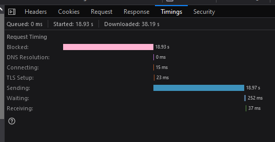

Magenta Webseite & Magenta Community verbessern (Sammelthread)
NTM
Dies soll ein Thema sein, in dem Darstellungsfehler und fehlerhafte Inhalte an einem Ort zusammengetragen werden können, damit diese hoffentlich bei den richtigen Teams landen.
NTM
Ich möchte auch gleich mal den Anfang machen.
Der Footer von der Community nicht auf den selben Stand, wie auf der Magenta Seite. Es ist sind dort noch Produkte gelistet, welche es nicht mehr im Sortiment gibt, wie das Smart Home, oder Smartphones mancher Hersteller.
danke für die Hinweise - ich schaue mir das gerne an.
LG,
Georg
Georgie
Den FAQ habe ich korrigiert, die Darstellungsfehler auf der Magenta Homepage und dem Footer auf der Community-Seite weiter gegeben.
Georgie
Die Pop-Ups funktionieren jetzt auch wieder und die 5 GHz wurden bei der 5G-Box hinzugefügt.
Warum der Footer von jenem der Homepage abweicht ist noch in Abklärung.
Georgie
Hallo liebe Experten, der Footer der Community-Seite ist jetzt auf dem aktuellen Stand.
@NTM, danke nochmal für den Hinweis!
NTM
Danke
@Georgie
das du und deine Kollegen sich darum gekümmert haben.
Als Hinweis, beim neuen Footer hat sich ganz unten nun ein ű eingeschlichen.
Auch habe ich gesehen, dass es leider weitere Ungereimtheiten bei den Pop-Ups auf der https://www.magenta.at/internet/internettarife Seite gibt. Beim Pop-Up zu den 4G Flex Boxen steht beim B535 bei den W-Lan Spezifikationen auch Megapixel-Zahlen (wobei ich hoffe, dass der Router keine versteckten Kamers hat
). Und beim Pop-Up zum Hybrid Router wird das Bild der Fritz!Box 7530 verwendet, anstelle des Hybrid Router (das Bild des Huawei Hybrid Router ist aber
am Webserver vorhanden
). Und hat der Hybrid Router denn nicht 3x3 W-Lan auf 5GHz?
Georgie
Neverending Story
So geht mir wenigstens die Arbeit nicht aus.
xaver14
Hallo Georgie.
ich möchte mein Profil löschen, also au der Community aussteigen.
Was muss ich tun?
LG
Xaver14
Georgie
Hallo Xaver,
du musst gar nichts weiter tun
Ich werde dein Community-Konto gleich komplett löschen, das dauert nur ein paar Sekunden.
Schade, dass du das User-helfen-User-Forum nicht weiter nutzen magst. Alles Gute!
Diesmal ist mir aufgefallen, dass noch die alten EB & LB der Fix Tarife von August 2020 auf der
Internet-Zuhause Seite
verlinkt sind. Es gäbe nämlich schon eine Version von Februar 2021.
LG NTM
Georgie
Hallo NTM,
ich gebe das gerne weiter.
LG,
Georg
NTM
Ist bei euch die Community die letzten Tage auch recht träge.
inwiefern träge? Ich nutze Google Chrome (Version 97.0.4692.71 (Offizieller Build) (32-Bit)) und hüpfe hier in der Community hin und her. Ich merke aktuell keinen Unterschied zu sonst.
Liebe Grüße, Jonathan
NTM
Am PC (Windows 10 21H2) hatte ich dieses träge Verhalten auf allen drei installierenten Browsern feststellen können (Edge, Chrome und Firefox). Wobei ich von den drei Chrome als Daily verwende, Edge immer mal wieder und Firefox so gut wie nie. Alle drei Browser sind aber am neusten Stand: Chrome: 97.0.4692.99; Edge: 97.0.1072.76; Firefox: 96.0.3
Cookies löschen, alle Netzwerkgeräte neu starten und updaten, falls verfügbar, hat auch nichts gebracht. Es waren auch nicht alle Seitenaufrufe betroffen, aber die deutliche Mehrheit. Auch ohne klares Muster, dass bestimmte Seiten oder Arten von Seiten nicht betroffen wären. Über die Dev-Tools habe ich dann festgestellt, dass immer die Haupt-HTML Seite sehr lange ladet und mit einer hohen Verzögerung überhaupt erst zum Laden beginnt. Dieser Screenshot stammt von den Firefox Dev-Tools, wobei dieses Bild auf alle Seiten mit diesem Verhalten anwendbar war. Auch in Chrome war es praktisch ident.

Aktuell funktioniert es wieder gewohnt schnell, warum auch immer. Ich werde weiterhin beobachten, ob ich einen Zusammenhang zu einer anderen Webseite oder Anwendung feststellen kann.
Lustigerweise hatte ich mit der Community am Smartphone (Android 12) und iPad parallel zu meinen intensiveren Tests keine Probleme (verwende ich für das Zugreifen auf die Community eher nicht, wenn ich zu Hause bin). Am Smartphone tritt aber ein ähnliches Verhalten auf, wenn ich mal nicht im Magenta Netz unterwegs bin. Ich habe Chrome zurückgesetzt, hat aber auch nicht geholfen. Hier hat es sich noch nicht verbessert.
Bearbeitet
von NTM
IT-Freak
Ich konnte gerade auch Probleme beobachten.
Angemeldet ging es langsam, ohne User ging es deutlich schneller.
Christian_E
Bei mir eigentlich kein Problem - läuft soweit alles in gewohnter Form mit der aktuellen Version des Chrome...
{kind=link}
{kind=link}